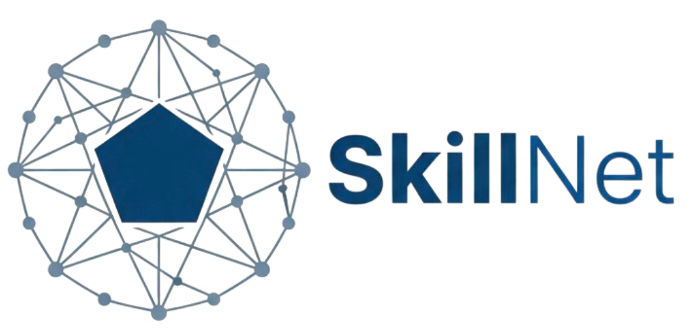
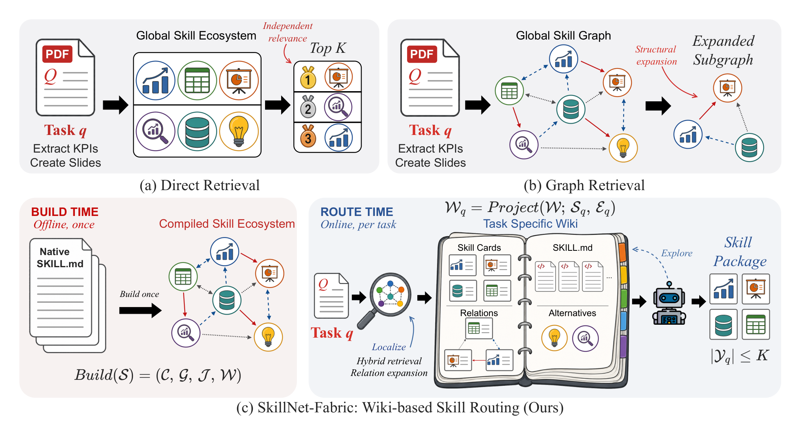

Scattered skills become a connected graph.
Executable tasks, solutions, tests, and environments.
The task and each skill's constraints shape the final choice.

Search, evaluate, analyze, and route skills from your own workflow.
GitHub skills indexed